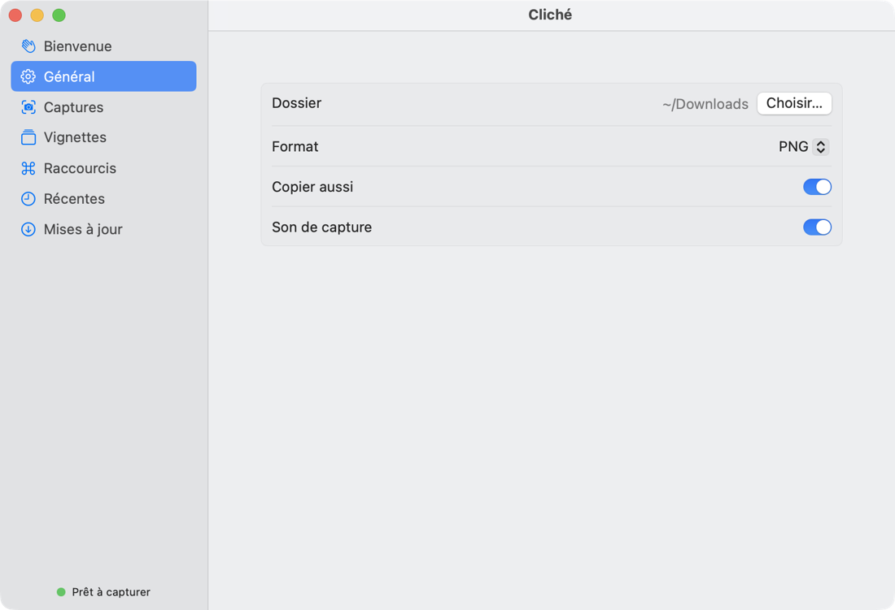

En développement
Cliché
Capturer, annoter, filmer : l’outil d’écran qu’on voulait, fait maison. Nom provisoire.
Capturer, annoter, filmer : l’outil d’écran qu’on voulait, fait maison. Nom provisoire.
!Le problème
✓La solution
Cliché capture, annote et enregistre l'écran au même endroit.

Le nom « Cliché » est provisoire, et l’icône aussi. Pas encore de téléchargement : la page se mettra à jour à la première version publiée.